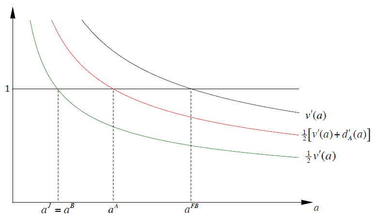
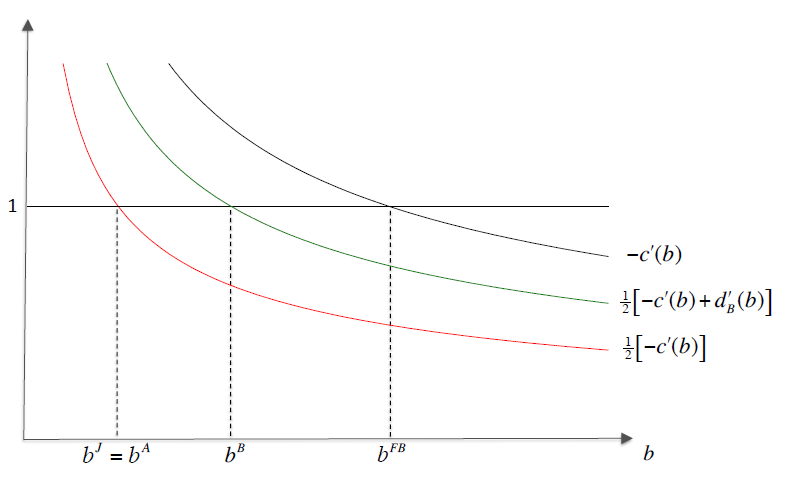

Incomplete Contracts: Property Rights

In incomplete contract models, one of the most prominent applications lie in the ownership structure, or property rights. The key is the residual control rights: When a contract is incomplete (that is usually the case), owner of a nonhuman asset has the right to decide how the asset should be used in circumstances not covered by the contract.
Vertical Integration
Let there be some intermediate product, which can only be produced with some capital (labour, physical capital, etc.). The final product cannot be produced without the intermediate product.
Assume two parties:
Party A: Buyer of the intermediate product. This party has the human capital to produce the final product.
Party B: Supplier of the intermediate product. This party has the human capital to produce the intermediate product.
Each party can invest in its human capital. Then the main question is: Who should be the owner of the physical asset that is necessary to produce the intermediate product?
Consider 3 different ownership structures:
\(o=B\) (non-integration): B is the owner.
\(o=A\) (integration): A is the owner.
\(o=J\) (joint ownership): Both parties have veto power.
Timing
Date 0: The parties agree on the ownership structure \(o \in \{A,B,J\}\).
Date 1: Both parties investment on human capital. Denote as \(a\) and \(b\) respectively.
Date 2: The parties bargaining over the delivery of the intermediate product: \(x\in\{0,1\}\).
If at date 2 the parties agree to collaborate, then the total surplus is: $$v(a)-c(b)>0$$
Assumptions
The following assumptions ensure that there exists an interior solution.
Strictly increasing and strictly concave value function: $$v'(a)>0 \text{ and } v''(a) < 0$$
Strictly decreasing and strictly convex cost function: $$-c'(a)>0 \text{ and } -c''(a) < 0$$
Some conditions similar to Inada condition: $$v'(0)>2 \text{ and } \lim_{a\rightarrow \infty}v'(a)=0$$ $$-c'(0)>2 \text{ and } \lim_{b\rightarrow \infty}v'(a)=0$$
Default Payoffs
If the parties do not agree to collaborate at date 2, then they get their default payoffs \(D^o_A\) and \(D^o_B\):
| Ownership | \(D^o_A\) | \(D^o_B\) |
|---|---|---|
| \(o=A\) | \(d_A(a)\) | \(0\) |
| \(o=B\) | \(0\) | \(d_B(b)\) |
| \(o=J\) | \(0\) | \(0\) |
Impose further assumptions regarding the default payoffs: $$d_A(a) < v(a)-c(b)$$ $$d_B(a) < v(a)-c(b)$$ If the two parties do not reach an agreement, then the owner can produce the intermediate product without the other party's human capital. Thus, they get less than what they could have got with an agreement. If they jointly own the physical asset, then both of them have veto power, so they get \(0\).
Moreover, investments are relationship-specific: $$v'(a)>d'_A(a)$$ $$-c'(b)>d'_B(b)$$ That is to say, the investment can have a more positive affect with the other party joins.
First Best
Ex-post efficiency requires the parties collaborate at date 2. So they trade the intermediate product: $$x=1 \text{ as } v(a)-c(b)> D_A^o+D_B^o$$ Ex-ante efficient investments maximises the total surplus: $$v(a)-c(b)-a-b$$ With first-order conditions: $$v'(a^{FB})=1$$ $$-c'(b^{FB})=1$$
Second Best
Impose the following assumptions:
1. Throughout, the parties are symmetrically informed.
2. Incomplete contracting: one of the three ownership structure and an up-front payment.
3. Divide by Nash Bargaining Solution: Each party obtains its default-payoff plus half of the renegotiation surplus:
$$U^o_A(a,b)=D^o_A+\frac{1}{2}[v(a)-c(b)-D^o_A-D^o_B]-a$$
$$U^o_B(a,b)=D^o_B+\frac{1}{2}[v(a)-c(b)-D^o_A-D^o_B]-b$$
Therefore, the parties date 1 investments are: $$a^o=\arg\max_aU^o_A(a,b^o)$$ $$b^o=\arg\max_bU^o_B(a^o,b)$$
There are three different kinds of ownership structure. Thus, analyse all three cases.
Integration: \(o=A\)
Party A's date 1 payoff: $$U^A_A(a,b)=d_A(a)+\frac{1}{2}[v(a)-c(b)-d_A(a)]-a$$ $$=\frac{1}{2}[v(a)-c(b)+d_A(a)]-a$$ Take FOC: $$\frac{1}{2}[v'(a^A)+d'_A(a^A)]=1$$
Party B's date 1 payoff: $$U^A_B(a,b)=\frac{1}{2}[v(a)-c(b)-d_A(a)]-b$$ Take FOC: $$\frac{1}{2}[-c'(b^A)]=1$$
Underinvestment for both parties:
By assumption, \(d'_A(a)< v'(a)\). And \(v(a)\) is concave, while \(c(b)\) is convex. Thus:
$$a^A< a^{FB}$$
$$b^A< b^{FB}$$
Non-Integration: \(o=B\)
Party A's date 1 payoff: $$U^B_A(a,b)=\frac{1}{2}[v(a)-c(b)-d_B(b)]-a$$ Take FOC: $$\frac{1}{2}v'(a^B)=1$$
Party B's date 1 payoff: $$U^B_B(a,b)=d_B(b)+\frac{1}{2}[v(a)-c(b)-d_B(b)]-b$$ $$=\frac{1}{2}[v(a)-c(b)+d_B(b)]-b$$ Take FOC: $$\frac{1}{2}[-c'(b^A)+d'_B(b^B)]=1$$
Underinvestment for both parties:
By assumption, \(d'_B(b)< v'(a)\). And \(v(a)\) is concave, while \(c(b)\) is convex. Thus:
$$a^B< a^{FB}$$
$$b^B< b^{FB}$$
Joint ownership: \(o=J\)
Party A's date 1 payoff: $$U^B_A(a,b)=\frac{1}{2}[v(a)-c(b)]-a$$ Take FOC: $$\frac{1}{2}v'(a^J)=1$$
Party B's date 1 payoff: $$U^J_B(a,b)=\frac{1}{2}[v(a)-c(b)]-b$$ $$=\frac{1}{2}[v(a)-c(b)]-b$$ Take FOC: $$\frac{1}{2}[-c'(b^J)]=1$$
Underinvestment for both parties:
In particular:
$$a^J=a^B< a^{FB}$$
$$b^J=b^A< b^{FB}$$
In conclusion, there is always underinvestment with regard to the first-best benchmark. Specifically: $$a^J=a^B< a^A< a^{FB}$$ $$b^J=b^A< b^B< b^{FB}$$ Plot the equilibrium investment levels under different ownership as the following graphs:


The Optimal Ownership Structure
At date 0, the parties agree on the ownership structure that maximises the total surplus (which they can divide between them by up-front payments): $$v(a^o)-c(b^o)-a^o-b^o$$ By assumption, the total surplus is strictly concave. Hence, the total surplus is increasing in the investment levels. (There is always underinvestment w.r.t. the first-best benchmark).
Joint ownership cannot be optimal, as it has the most severe underinvestment problem. Further, if one party's default payoff is always zero, then the other party should be the owner. For example: $$d_A(a)=0 \Rightarrow a^A = a^B \text{ but } b^A< b^B \Rightarrow o=B \text{ is optimal}$$
In particular, if only one party has to make an investment decision, then this party should be the owner. You should provide the party with the most important investment task the ownership rights, to increase the investment incentives.
Joint Ventures
Joint ownership can be optimal if the parties invest in physical assets.
Timing
Date 0: The parties agree on the ownership structure \(o \in \{A,B,J\}\).
Date 1: Both parties invests. Denote as \(a\) and \(b\) respectively, with investment cost \(\frac{1}{2}a^2\) and \(\frac{1}{2}b^2\).
Date 2: The parties bargaining over the delivery of the intermediate product: \(x\in\{0,1\}\).
If an agreement is reached in the date 2 negotiations, they can generate total surplus \(a+b\).
If they do not reach an agreement, then they get their default payoffs \(D^o_A\), \(D^o_B\):
| Ownership | \(D^o_A\) | \(D^o_B\) |
|---|---|---|
| \(o=A\) | \((a+b)\epsilon\) | \(0\) |
| \(o=B\) | \(0\) | \((a+b)\epsilon\) |
| \(o=J\) | \(0\) | \(0\) |
First Best
Obviously, ex-post efficiency requires both parties agree to collaborate. Then, the ex ante efficient investment levels is to maximise the total surplus: $$a-b-\frac{1}{2}a^2-\frac{1}{2}b^2$$ Take FOC: $$a^{FB}=1 \text{ and } b^{FB}=1$$ And the total surplus is \(1\).
Second Best
First look at date 2 negotiations.
Date 2 Negotiations
By Nash Bargaining Solution, we have the following date 2 payoffs: $$D^o_A+\frac{1}{2}(a+b-D^o_A-D^o_B) \tag{Party A}$$ $$D^o_B+\frac{1}{2}(a+b-D^o_A-D^o_B) \tag{Party B}$$
Then, according to the ownership structure, derive the investment levels.
Investment Levels
Under A ownership (\(o=A\)): $$a^A=\arg\max_a \left\{(a+b)\epsilon+\frac{1}{2}[a+b-(a+b)\epsilon]-\frac{1}{2}a^2\right\}=\frac{1}{2}(1+\epsilon)$$ $$b^A=\arg\max_b \left\{\frac{1}{2}[a+b-(a+b)\epsilon]-\frac{1}{2}b^2\right\}=\frac{1}{2}(1-\epsilon)$$
Under B ownership (\(o=B\)): $$a^B=\arg\max_a \left\{\frac{1}{2}[a+b-(a+b)\epsilon]-\frac{1}{2}a^2\right\}=\frac{1}{2}(1-\epsilon)$$ $$b^B=\arg\max_b \left\{(a+b)\epsilon+\frac{1}{2}[a+b-(a+b)\epsilon]-\frac{1}{2}b^2\right\}=\frac{1}{2}(1+\epsilon)$$
Under joint ownership (\(o=J\)): $$a^J=\arg\max_a \left\{\frac{1}{2}(a+b)-\frac{1}{2}a^2\right\}=\frac{1}{2}$$ $$b^J=\arg\max_b \left\{\frac{1}{2}(a+b)-\frac{1}{2}b^2\right\}=\frac{1}{2}$$
It is easy to notice the following lemma: $$a^B< a^J< a^A< a^{FB}$$ $$b^A< b^J< b^B< b^{FB}$$
By comparing the total surplus, we can derive the optimal ownership structure.
Optimal Ownership Structure
The total surplus given ownership structure \(o\) is: $$a^o+b^o-\frac{1}{2}(a^o)^2-\frac{1}{2}(b^o)^2$$ When \(o=A\) or \(o=B\), the total surplus is: $$\frac{3}{4}-\frac{1}{4}\epsilon^2$$ When \(o=J\), the total surplus is: $$\frac{3}{4}$$ Therefore, joint ownership structure is optimal.
Privatisation
This is an application of the incomplete contract. In particular, a public good is to be offered. The question is: Who should own the physical asset needed to provide the public good, the government (G) or a private manager (M)?
Timing
Date 0: The parties agree on the ownership structure \(o \in \{G,M\}\).
Date 1: Party M chooses investment \(e\in[0,1]\) that leads to an innovation, with investment cost \(\frac{1}{2}e^2\).
Date 2: The parties bargaining over \(x\in\{0,1\}\) where \(x=1\) means the innovation is implemented.
When no agreement at date 2 is reached, the owner chooses \(x\). If the innovation is implemented, the provision costs of M is reduced. The provision costs: $$1-xe$$ Yet, it reduces the quality. Thus, G's benefit goes down. The benefit: $$2-x\epsilon e$$ where \(\epsilon \in(0,1)\).
First Best
The total surplus is: $$2-x\epsilon e-(1-xe)-\frac{1}{2}e^2=1+(1-\epsilon)xe-\frac{1}{2}e^2$$ Then, the efficient decision is: $$x^{FB}=1$$ $$e^{FB}=\arg\max_e \left\{1+(1-\epsilon)e-\frac{1}{2}e^2 \right\}=1-e$$
Second Best
Solve by backward induction.
Date 2 Negotiations
If it is private ownership (\(o=M\)):
First, get the Nash Bargaining Solution. In case of disagreement, M chooses \(x=1\), as it reduces the cost \(1-xe\) by the greatest extent. Then, the default payoffs are:
$$D^M_M=-(1-e)$$
$$D^M_G=2-\epsilon e$$
The renegotiation surplus is therefore \(0\). We can see this by comparing the date 2 surplus under an agreement: They will trade anyway.
Then, date 2 payoffs are:
$$-(1-e) \tag{M}$$
$$2-\epsilon e \tag{G}$$
If it is public ownership (\(o=G\)):
In case of disagreement, G chooses \(x=0\), as the innovation reduces the benefit \(2-\epsilon e\). Then, the default payoffs are:
$$D^G_M=-1$$
$$D^G_G=2$$
The renegotiation surplus is therefore:
$$1+(1-\epsilon)e-(-1+2)$$
Then, date 2 payoffs are:
$$-1+\frac{1}{2}[1+(1-\epsilon)e-(-1+2)]=-1+\frac{1}{2}[(1-\epsilon)e] \tag{M}$$
$$2+\frac{1}{2}[1+(1-\epsilon)e-(-1+2)]=2+\frac{1}{2}[(1-\epsilon)e] \tag{G}$$
Date 1 Investment Incentives
If it is private ownership (\(o=M\)): $$e^M=\arg\max_e \left\{-(1-e)-\frac{1}{2}e^2\right\}=1$$
If it is public ownership (\(o=G\)): $$e^G=\arg\max_e \left\{-1+\frac{1}{2}[(1-\epsilon)e]-\frac{1}{2}e^2\right\}=\frac{1}{2}(1-\epsilon)$$
Thus:
$$e^G< e^{FB}=1-\epsilon < e^M$$
Private ownership leads to over investment in cost-reducing innovation, and
Public ownership leads to under investment in cost-reducing innovation.
Date 0 Optimal Optimal Ownership Structure
Parties agree on \(o\in \{G,M\}\) to maximise the total surplus: $$1+(1-\epsilon)e^o-\frac{1}{2}(e^o)^2$$
If it is private ownership (\(o=M\)): $$1+(1-\epsilon)-\frac{1}{2}=\frac{3}{2}-\epsilon$$
If it is public ownership (\(o=G\)): $$1+(1-\epsilon)\frac{1}{2}(1-\epsilon)-\frac{1}{2}[\frac{1}{2}(1-\epsilon)]^2=1+\frac{3}{8}(1-\epsilon)^2$$
By comparison, the parties agree on private ownership (\(o=M\)) if \(\epsilon < \frac{1}{3}\). Thus, if the quality reduction that accompanies the reduction of the provisional cost is sufficiently small, then private ownership is optimal.